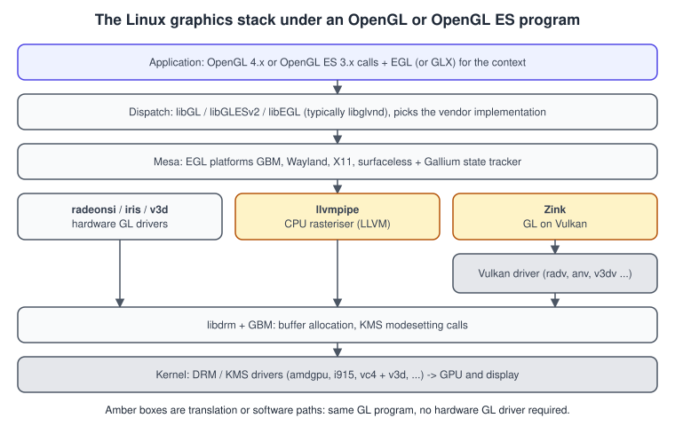
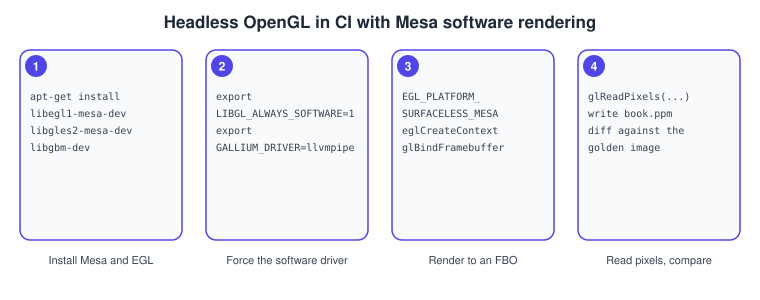

OpenGL on Embedded Devices and Linux
|
This content was generated with the assistance of AI and should be verified against the official documentation before being relied on in production. |
On a desktop PC, an OpenGL program asks a window system for a window and gets a context with it. On an embedded board, a kiosk or a continuous-integration (CI) machine there may be no window system at all. Linux still offers OpenGL and OpenGL ES there, through EGL, the Generic Buffer Manager (GBM) and the kernel’s Direct Rendering Manager with its Kernel Mode Setting (DRM/KMS). The open-source Mesa project provides the drivers: hardware drivers for most GPUs, a software rasteriser (llvmpipe) for machines without one, and Zink, which implements OpenGL on top of Vulkan. This page explains the stack, shows two complete C++ programs (one that draws to the display through KMS, one that renders headless for CI), and lists the settings you will reach for.
The facts were checked in November 2026 against the Mesa documentation and the Khronos EGL registry. The
versions documented are OpenGL ES 3.0 as the common denominator on embedded GPUs, desktop OpenGL up to 4.6 where the hardware driver
supports it, and EGL 1.5. Platform requirements: a recent Mesa (the Debian or Ubuntu packages libegl1-mesa-dev,
libgles2-mesa-dev, libgbm-dev and libdrm-dev are enough to build the examples), a Linux kernel with a DRM driver for your GPU, and for the KMS
example a text console with no display server running. The scene is the Bookshelf GL triangle; the
Bookshelf model is bookshelf.glb.
Background for this page: EGL, Cross-Platform Translation Layers and GPU Architecture Basics.
The Linux graphics stack in one picture
An OpenGL call travels through several libraries before it reaches the GPU, and each layer is replaceable. Knowing the layers explains most "works on my machine" differences: a different driver, a different EGL platform or a different dispatch library.

-
The application calls OpenGL or OpenGL ES functions and uses EGL (or GLX on X11) to get a context.
-
The dispatch layer (
libGL,libGLESv2,libEGL) typically comes from libglvnd, which lets several vendors' implementations coexist and picks one at run time. -
Mesa implements EGL for several platforms (GBM, Wayland, X11 and a surfaceless platform) and the Gallium state tracker that translates GL into driver commands.
-
The driver is a hardware driver for the GPU, the llvmpipe software rasteriser, or Zink.
-
libdrm and GBM allocate buffers and call the kernel; DRM/KMS in the kernel drives the GPU and the display.
EGL platforms: choosing where the context lives
EGL needs to know what kind of native display and window it is attached to. EGL 1.5 introduced eglGetPlatformDisplay, which names the
platform explicitly; the older eglGetDisplay guesses.
| Platform | Native display and window | Use |
|---|---|---|
X11 ( |
An X |
Running under X, often with GLX instead. |
Wayland ( |
A |
Normal desktop and kiosk apps under a Wayland compositor. |
GBM ( |
A |
Direct to the display through KMS: no compositor at all. Kiosks, embedded boards. |
Surfaceless ( |
Nothing |
Headless: render to a framebuffer object, read the pixels back. Servers and CI. |
The EGL_KHR_platform_gbm extension adds the single token EGL_PLATFORM_GBM_KHR for the platform parameter. The native display must be a
struct gbm_device (or EGL_DEFAULT_DISPLAY, where the implementation chooses one), a GBM window surface is created from a gbm_surface, and each
config reports its GBM colour format in EGL_NATIVE_VISUAL_ID, which is how you pick a config that matches the buffers you allocate.
Window surfaces are supported, pixmap surfaces are not.
Source: Khronos: EGL_KHR_platform_gbm
Example 1: a triangle straight to the display (GBM and KMS)
The program below does what a compositor does for one frame: it finds a connected display and its mode through DRM, allocates a GBM surface of that size, creates an OpenGL ES 3.0 context on it through EGL, renders, and then asks KMS to scan the rendered buffer out. It must be run from a virtual console with no X or Wayland session using the GPU, as it becomes the DRM master. Build it with the CMake file that follows.
// kms_triangle.cpp: one OpenGL ES 3.0 frame on the display, with no window system.
#include <EGL/egl.h>
#include <EGL/eglext.h>
#include <GLES3/gl3.h>
#include <fcntl.h>
#include <gbm.h>
#include <unistd.h>
#include <xf86drm.h>
#include <xf86drmMode.h>
#include <cstdint>
#include <cstdio>
#include <vector>
static const char* kVertex = R"(#version 300 es
const vec2 kPositions[3] = vec2[3](vec2(-0.6, -0.5), vec2(0.6, -0.5), vec2(0.0, 0.6));
void main() { gl_Position = vec4(kPositions[gl_VertexID], 0.0, 1.0); }
)";
static const char* kFragment = R"(#version 300 es
precision mediump float;
out vec4 fragColor;
void main() { fragColor = vec4(0.85, 0.55, 0.2, 1.0); }
)";
static GLuint compile(GLenum type, const char* source) {
GLuint shader = glCreateShader(type);
glShaderSource(shader, 1, &source, nullptr);
glCompileShader(shader);
GLint ok = 0;
glGetShaderiv(shader, GL_COMPILE_STATUS, &ok);
if (!ok) {
char log[512];
glGetShaderInfoLog(shader, sizeof log, nullptr, log);
std::fprintf(stderr, "shader: %s\n", log);
}
return shader;
}
int main() {
// 1. DRM: open the device, find a connected connector, its first (preferred) mode and the CRTC.
int fd = open("/dev/dri/card0", O_RDWR | O_CLOEXEC);
if (fd < 0) { std::perror("open card0"); return 1; }
drmModeRes* resources = drmModeGetResources(fd);
drmModeConnector* connector = nullptr;
for (int i = 0; resources && i < resources->count_connectors; ++i) {
drmModeConnector* c = drmModeGetConnector(fd, resources->connectors[i]);
if (c && c->connection == DRM_MODE_CONNECTED && c->count_modes > 0) { connector = c; break; }
drmModeFreeConnector(c);
}
if (!connector) { std::fprintf(stderr, "no connected display\n"); return 1; }
drmModeModeInfo mode = connector->modes[0];
drmModeEncoder* encoder = drmModeGetEncoder(fd, connector->encoder_id);
if (!encoder) { std::fprintf(stderr, "no encoder bound to the connector\n"); return 1; }
uint32_t crtcId = encoder->crtc_id;
// 2. GBM: a surface that EGL renders into and KMS can scan out.
gbm_device* gbm = gbm_create_device(fd);
gbm_surface* gbmSurface = gbm_surface_create(gbm, mode.hdisplay, mode.vdisplay, GBM_FORMAT_XRGB8888,
GBM_BO_USE_SCANOUT | GBM_BO_USE_RENDERING);
// 3. EGL: display on the GBM platform, an ES 3 config whose native visual is the GBM format.
EGLDisplay display = eglGetPlatformDisplay(EGL_PLATFORM_GBM_KHR, gbm, nullptr);
if (!eglInitialize(display, nullptr, nullptr)) { std::fprintf(stderr, "eglInitialize failed\n"); return 1; }
eglBindAPI(EGL_OPENGL_ES_API);
const EGLint configAttributes[] = {EGL_SURFACE_TYPE, EGL_WINDOW_BIT, EGL_RENDERABLE_TYPE, EGL_OPENGL_ES3_BIT,
EGL_RED_SIZE, 8, EGL_GREEN_SIZE, 8, EGL_BLUE_SIZE, 8, EGL_NONE};
EGLint count = 0;
std::vector<EGLConfig> configs(64);
eglChooseConfig(display, configAttributes, configs.data(), static_cast<EGLint>(configs.size()), &count);
EGLConfig config = nullptr;
for (EGLint i = 0; i < count; ++i) {
EGLint visual = 0;
eglGetConfigAttrib(display, configs[i], EGL_NATIVE_VISUAL_ID, &visual);
if (visual == static_cast<EGLint>(GBM_FORMAT_XRGB8888)) { config = configs[i]; break; }
}
if (!config) { std::fprintf(stderr, "no config matches the GBM format\n"); return 1; }
const EGLint contextAttributes[] = {EGL_CONTEXT_CLIENT_VERSION, 3, EGL_NONE};
EGLContext context = eglCreateContext(display, config, EGL_NO_CONTEXT, contextAttributes);
EGLSurface surface = eglCreatePlatformWindowSurface(display, config, gbmSurface, nullptr);
eglMakeCurrent(display, surface, surface, context);
std::printf("GL_RENDERER=%s\nGL_VERSION=%s\n", glGetString(GL_RENDERER), glGetString(GL_VERSION));
// 4. Draw one frame.
GLuint program = glCreateProgram();
glAttachShader(program, compile(GL_VERTEX_SHADER, kVertex));
glAttachShader(program, compile(GL_FRAGMENT_SHADER, kFragment));
glLinkProgram(program);
glViewport(0, 0, mode.hdisplay, mode.vdisplay);
glClearColor(0.05f, 0.05f, 0.08f, 1.0f);
glClear(GL_COLOR_BUFFER_BIT);
glUseProgram(program);
glDrawArrays(GL_TRIANGLES, 0, 3);
eglSwapBuffers(display, surface);
// 5. KMS: wrap the front buffer in a framebuffer object and put it on the CRTC.
gbm_bo* bo = gbm_surface_lock_front_buffer(gbmSurface);
uint32_t handle = gbm_bo_get_handle(bo).u32;
uint32_t pitch = gbm_bo_get_stride(bo);
uint32_t framebuffer = 0;
drmModeAddFB(fd, mode.hdisplay, mode.vdisplay, 24, 32, pitch, handle, &framebuffer);
drmModeSetCrtc(fd, crtcId, framebuffer, 0, 0, &connector->connector_id, 1, &mode);
sleep(3);
// 6. Clean up in reverse order.
drmModeRmFB(fd, framebuffer);
gbm_surface_release_buffer(gbmSurface, bo);
eglMakeCurrent(display, EGL_NO_SURFACE, EGL_NO_SURFACE, EGL_NO_CONTEXT);
eglDestroySurface(display, surface);
eglDestroyContext(display, context);
eglTerminate(display);
gbm_surface_destroy(gbmSurface);
gbm_device_destroy(gbm);
drmModeFreeEncoder(encoder);
drmModeFreeConnector(connector);
drmModeFreeResources(resources);
close(fd);
return 0;
}cmake_minimum_required(VERSION 3.22)
project(embedded_gl LANGUAGES CXX)
set(CMAKE_CXX_STANDARD 20)
find_package(PkgConfig REQUIRED)
pkg_check_modules(EGL REQUIRED IMPORTED_TARGET egl)
pkg_check_modules(GLES REQUIRED IMPORTED_TARGET glesv2)
pkg_check_modules(GBM REQUIRED IMPORTED_TARGET gbm)
pkg_check_modules(DRM REQUIRED IMPORTED_TARGET libdrm)
add_executable(kms_triangle kms_triangle.cpp)
target_link_libraries(kms_triangle PRIVATE PkgConfig::EGL PkgConfig::GLES PkgConfig::GBM PkgConfig::DRM)
add_executable(headless_triangle headless_triangle.cpp)
target_link_libraries(headless_triangle PRIVATE PkgConfig::EGL PkgConfig::GLES)Source: CMake: FindPkgConfig
The sequence in the example is the same one every embedded renderer follows. For a real application the single drmModeSetCrtc
becomes a loop: render, lock the front buffer, schedule a page flip (drmModePageFlip), wait for the flip event, release the previous buffer.
Libraries such as SDL (its KMSDRM video driver) hide this plumbing; use them when you also need input and audio, and write the raw version only when you must control it.
Example 2: headless rendering for CI
A build server has no display and often no GPU. The surfaceless EGL platform needs neither: you create a context with no surface, render into a framebuffer object and read the pixels back. Combined with Mesa’s software rasteriser this lets a test render the Bookshelf scene and compare the image with a stored one on any Linux machine.
// headless_triangle.cpp: render to an FBO with no display and write a PPM image.
#include <EGL/egl.h>
#include <EGL/eglext.h>
#include <GLES3/gl3.h>
#include <cstdio>
#include <vector>
static const char* kVertex = R"(#version 300 es
const vec2 kPositions[3] = vec2[3](vec2(-0.6, -0.5), vec2(0.6, -0.5), vec2(0.0, 0.6));
void main() { gl_Position = vec4(kPositions[gl_VertexID], 0.0, 1.0); }
)";
static const char* kFragment = R"(#version 300 es
precision mediump float;
out vec4 fragColor;
void main() { fragColor = vec4(0.85, 0.55, 0.2, 1.0); }
)";
static GLuint compile(GLenum type, const char* source) {
GLuint shader = glCreateShader(type);
glShaderSource(shader, 1, &source, nullptr);
glCompileShader(shader);
return shader;
}
int main() {
constexpr int kWidth = 256, kHeight = 256;
EGLDisplay display = eglGetPlatformDisplay(EGL_PLATFORM_SURFACELESS_MESA, EGL_DEFAULT_DISPLAY, nullptr);
if (!eglInitialize(display, nullptr, nullptr)) { std::fprintf(stderr, "eglInitialize failed\n"); return 1; }
eglBindAPI(EGL_OPENGL_ES_API);
const EGLint configAttributes[] = {EGL_RENDERABLE_TYPE, EGL_OPENGL_ES3_BIT, EGL_SURFACE_TYPE, 0, EGL_NONE};
EGLConfig config = nullptr;
EGLint count = 0;
eglChooseConfig(display, configAttributes, &config, 1, &count);
const EGLint contextAttributes[] = {EGL_CONTEXT_CLIENT_VERSION, 3, EGL_NONE};
EGLContext context = eglCreateContext(display, config, EGL_NO_CONTEXT, contextAttributes);
// No surface: the context is made current with EGL_NO_SURFACE (needs EGL_KHR_surfaceless_context).
if (!eglMakeCurrent(display, EGL_NO_SURFACE, EGL_NO_SURFACE, context)) {
std::fprintf(stderr, "eglMakeCurrent failed: 0x%x\n", eglGetError());
return 1;
}
std::printf("GL_RENDERER=%s\n", glGetString(GL_RENDERER));
GLuint color = 0, framebuffer = 0;
glGenRenderbuffers(1, &color);
glBindRenderbuffer(GL_RENDERBUFFER, color);
glRenderbufferStorage(GL_RENDERBUFFER, GL_RGBA8, kWidth, kHeight);
glGenFramebuffers(1, &framebuffer);
glBindFramebuffer(GL_FRAMEBUFFER, framebuffer);
glFramebufferRenderbuffer(GL_FRAMEBUFFER, GL_COLOR_ATTACHMENT0, GL_RENDERBUFFER, color);
if (glCheckFramebufferStatus(GL_FRAMEBUFFER) != GL_FRAMEBUFFER_COMPLETE) {
std::fprintf(stderr, "framebuffer incomplete\n");
return 1;
}
GLuint program = glCreateProgram();
glAttachShader(program, compile(GL_VERTEX_SHADER, kVertex));
glAttachShader(program, compile(GL_FRAGMENT_SHADER, kFragment));
glLinkProgram(program);
glViewport(0, 0, kWidth, kHeight);
glClearColor(0.05f, 0.05f, 0.08f, 1.0f);
glClear(GL_COLOR_BUFFER_BIT);
glUseProgram(program);
glDrawArrays(GL_TRIANGLES, 0, 3);
std::vector<unsigned char> pixels(kWidth * kHeight * 4);
glReadPixels(0, 0, kWidth, kHeight, GL_RGBA, GL_UNSIGNED_BYTE, pixels.data());
std::FILE* out = std::fopen("book.ppm", "wb");
std::fprintf(out, "P6\n%d %d\n255\n", kWidth, kHeight);
for (int y = kHeight - 1; y >= 0; --y) { // OpenGL rows start at the bottom
for (int x = 0; x < kWidth; ++x) std::fwrite(&pixels[(y * kWidth + x) * 4], 1, 3, out);
}
std::fclose(out);
eglMakeCurrent(display, EGL_NO_SURFACE, EGL_NO_SURFACE, EGL_NO_CONTEXT);
eglDestroyContext(display, context);
eglTerminate(display);
return 0;
}To run it on a machine with no usable GPU, force Mesa’s software path, as the storyboard shows:
export LIBGL_ALWAYS_SOFTWARE=1
export GALLIUM_DRIVER=llvmpipe
./headless_triangle # prints GL_RENDERER with "llvmpipe" and writes book.ppmSource: Mesa: Environment variables

Compare images with a tolerance rather than byte for byte: software rasterisers and hardware differ in rounding, and driver upgrades change low bits. Mesa describes llvmpipe as multithreaded and as its fastest software rasteriser, which makes it workable for small test scenes.
Source: Mesa: llvmpipe
Mesa drivers, llvmpipe and Zink
Mesa’s Gallium drivers cover most GPUs, for example radeonsi for AMD, iris for Intel, and v3d for the Broadcom GPU of the Raspberry Pi 4 and 5. Two drivers are not tied to a GPU:
-
llvmpipe is a CPU rasteriser that uses LLVM to generate code at run time and spreads work over the CPU cores. It is the universal fallback and the CI choice above. It is not for games.
-
Zink is a Gallium driver that translates OpenGL into Vulkan calls, so that a GPU that only has a Vulkan driver still offers desktop OpenGL. Mesa documents that Zink always exposes at least OpenGL 2.1 when Vulkan is present and offers higher versions up to 4.6 when the Vulkan device meets that version’s requirements. On macOS Zink is documented as experimental with very limited capabilities.
| Setting | Effect |
|---|---|
|
Use a software rasteriser instead of the hardware driver. |
|
Select the llvmpipe Gallium driver. |
|
Run OpenGL through Zink on top of the Vulkan driver. |
|
Report a version the driver does not fully support; for testing code paths only, since the missing features still fail. |
|
Zink’s debug flags and descriptor mode, documented on the Zink page. |
|
Pick the default EGL platform for |
Source: Mesa: Zink; Mesa: Environment variables
Whatever the stack, print what you got. eglinfo and glxinfo -B (from the Mesa utilities packages) list the vendor, renderer and versions, and
the programs above print GL_RENDERER themselves. The full set of limits you can query is in
Versions, Profiles and Extensions.
Raspberry Pi and other embedded GPUs
Embedded GPUs are usually OpenGL ES first. On the Raspberry Pi 4 and 5 the Mesa V3D driver is a conformant OpenGL ES 3.1 driver and V3DV is the Vulkan driver; Mesa’s development focuses on V3D 4.2 (Pi 4) and V3D 7.1 (Pi 5). Display is handled by the kernel’s VC4 DRM driver and rendering by the V3D kernel module, so Mesa shares buffers between the two kernel drivers. That is the situation GBM and the DRM code above manage for you. Practical consequences:
-
Write ES 3.0 shaders (
#version 300 es) and do not assume geometry or tessellation shaders. CheckGL_VERSIONon the board for what else is exposed. -
Mind fill rate and memory bandwidth: render at the native resolution of the display only if needed, compress textures, avoid overdraw and large framebuffer reads. These are the mobile rules of Performance and Profiling.
-
To use desktop OpenGL where the driver offers only ES, Zink or a compatibility layer are options, but test the performance first.
-
GLFW can create an OpenGL ES context through EGL on the desktop, which lets the same code run on the board and on your machine:
#include <GLFW/glfw3.h>
// Before glfwCreateWindow: ask for OpenGL ES 3.0 created through EGL.
glfwWindowHint(GLFW_CLIENT_API, GLFW_OPENGL_ES_API);
glfwWindowHint(GLFW_CONTEXT_CREATION_API, GLFW_EGL_CONTEXT_API);
glfwWindowHint(GLFW_CONTEXT_VERSION_MAJOR, 3);
glfwWindowHint(GLFW_CONTEXT_VERSION_MINOR, 0);Source: GLFW: Context related hints; Mesa: V3D
Common mistakes
-
Running the KMS example from a desktop session. The compositor owns the display;
drmModeSetCrtcfails. Switch to a text console. -
Choosing an EGL config without checking
EGL_NATIVE_VISUAL_ID. The surface creation fails with a mismatch error, or you get a buffer the display cannot scan out. -
Linking only
libGL. On an embedded system linklibEGLandlibGLESv2; desktoplibGLmay not exist. -
Assuming hardware acceleration in CI. Set the software variables explicitly so a missing GPU does not produce a context-creation error that looks like a code bug.
-
Comparing frames byte for byte. Allow a tolerance.
-
Using a Mesa version override as a fix. It changes what the driver claims, not what it can do.
What older guides get wrong today
| Older guide says | Today |
|---|---|
Mesa supports OpenGL 1.5 only (the SuperBible’s Linux chapter). |
Mesa provides OpenGL up to 4.6 on hardware drivers, plus llvmpipe and Zink. |
Develop OpenGL ES 2.0 on the desktop with a vendor emulator on Visual Studio 2005. |
Use native EGL on Linux with Mesa, GLFW with a context creation hint for EGL, or ANGLE. |
GLUT creates the window and context on Linux. |
GLUT is unmaintained; use GLFW or SDL, or EGL with GBM for no-window-system targets. |
An embedded GPU means OpenGL ES 2.0. |
ES 3.0 and 3.1 are common, for example 3.1 on the Raspberry Pi 4 and 5 with Mesa’s V3D driver. |